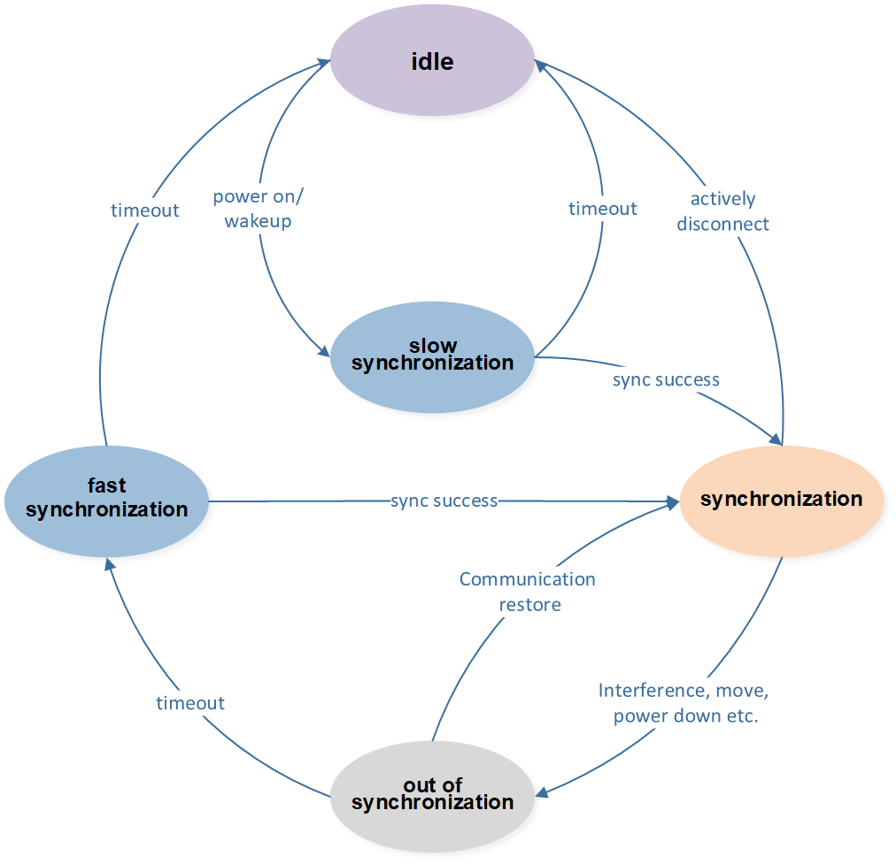
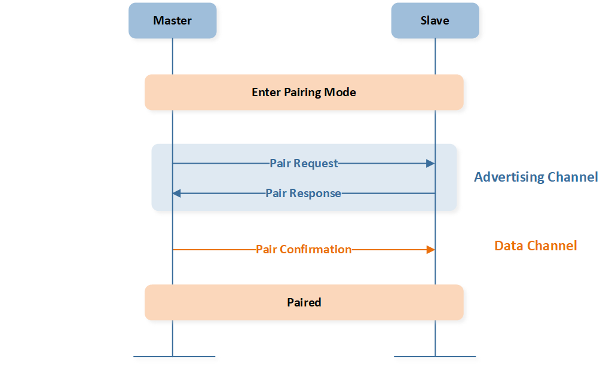
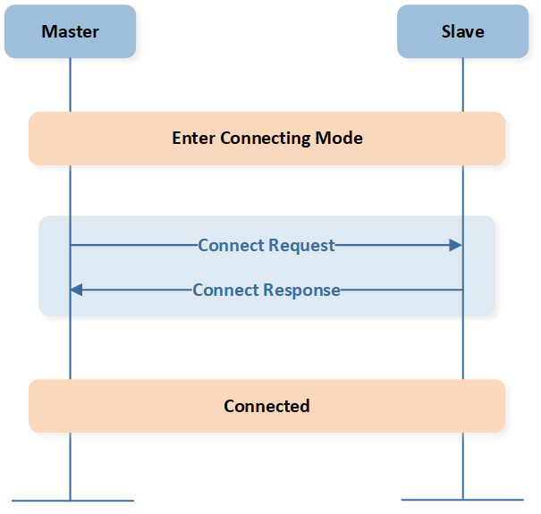
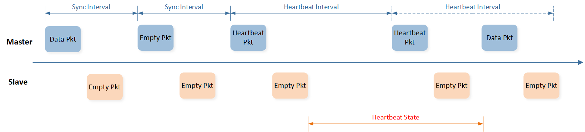

HID 私有协议规范
本协议是 Realtek 私有无线协议，支持点对点通信，适用于 HID 相关的应用。
本协议特性如下：
支持 4K 超高上报率
支持多种重传机制满足不同业务的可靠性需求
采用跳频技术提高抗干扰能力
支持配对实现快速绑定
支持空闲时自动切换低功耗模式
本协议分为两层：物理层和链路层。物理层定义了信道、RF 参数和调制相关的。链路层定义了配对、连接和链路维护等功能，为应用层提供通信服务。本文后续部分介绍了本协议的详细内容。
物理层
物理信道
工作频带为 2.4GHz ISM 频段，即 2400~2483.5MHz。
信道中心频点和数量可配置。默认为 12 个信道，分别为 2432、2447、2462、2477、2407、2422、2437、2452、2442、2457、2472、2413MHz。
调制方式
特性如下：
Bandwidth Time 因子 = 0.5
调制指数 = 0.5
符号速率 = 2 Mbps
链路层
帧格式
帧格式如下表所示。除了 CRC 字段的大小端是 MSByte 和 MSBit 的，其他所有字段的大小端都是 LSByte 和 LSBit 的。
字段名 |
长度（bit） |
说明 |
|---|---|---|
PREAMBLE |
8 |
如果 access address 的 lsb 是 0，则取值 0xAA 如果 access address 的 lsb 是 1，则取值 0x55 |
ACCESS ADDRESS |
32 |
逻辑信道标识 |
1 |
应答位 |
|
7 |
序列号 |
|
LENGTH |
7 |
payload 字段的长度 |
PAYLOAD |
n*8 |
指令或者应用数据，变长 n 字节 |
CRC |
8 |
校验和 |
编码
数据收发时会使用 CRC 校验和白化码，详细参数见下面章节。
CRC 校验
校验范围为 access address 到 payload
多项式 0x107
初值 0xff
白化
编码范围为 ACK 到 CRC
多项式 0x91
初值基于 channel index
设备角色
HID 应用中，鼠标等周边设备和 dongle 之间进行点对点通信。本协议将鼠标等周边设备定义为主设备，dongle 定义为从设备。
状态
两个设备默认是处于空闲状态，即不进行通信。当两个设备尝试建立连接时，主设备和从设备是不同步的，可能工作在不同的物理信道上，因而无法立即通信。此时两者会通过跳频的方式，同步到同一个物理信道上，建立稳定连接。此过程称为慢同步状态。然后，双方持续在该物理信道上进行 ping-pong 通信，称作同步状态。同步 上的设备由于干扰、设备移动、断电等等原因，可能会失去同步而无法听到对方消息，称作失步状态。失步状态可能恢复正常，切回同步状态；也可能超时，超时之后，设备会进入回连过程。此时主设备和从设备也是不同步的，可能工作在不同的物理信道上，两者会再次通过跳频的方式，尝试同步到同一个物理信道上恢复连接。如果恢复成 功，则切回同步状态，否则进入空闲状态。
在这些状态中，只有连接和回连两个状态会做信道跳频。连接过程的跳频使用全部信道，且跳频频率低，因而称作慢同步；回连过程的跳频使用部分信道，且跳频频率高，因而称作快同步。
综上，设备的状态分为：空闲、慢同步、同步、失步和快同步。下面章节会再介绍各个状态的行为。
空闲
空闲状态不进行通信。设备刚上电，设备断线，或者长时间不操作后主动断线，都会进入空闲状态。
慢同步
主设备采用全信道顺序跳频方式。
从设备通过全信道评估，挑选最好的信道。
主设备和从设备的跳频频率分别为 Fm 和 Fs，默认 Fm = 1KHz，Fs = 5Hz。
同步
设备会周期性的单次 ping-pong 通信，该周期为同步间隔 synchronization interval。主设备为了平衡功耗和性能，可以调整同步间隔。
失步
主设备每次同步间隔发送消息后都会等待从设备的应答，如果超时一直没收到正确应答，则认为失去同步。
从设备会持续监听信道来接收消息，如果超时没有听到主设备报文，则认为失去同步。
失步超时时间记为 synchronization lost timeout period。主设备在失步超时之前的同步次数为 synchronization lost timeout period 除以 synchronization interval。同步次数需要保证 2 次及以上，太小时会频繁的失步超时，进而进入快同步状态而中断正常通信，影响通信效率。
快同步
主设备和从设备的跳频信道范围是当前信道所处的信道区段组成的信道子集，加快两端恢复同步的速度。信道默认分 3 组，即 {2432、2447、2462、2477}、{2407、2422、2437、2452}、{2442、2457、2472、2413}。例如同步的信道是 2422MHz，则快同步的跳频频点为 2407、2422、2437、2452MHz。
主设备采用顺序跳频方式，从设备通过信道评估挑选最好的信道。
状态转移图
综上，各个状态之间的关系如图 状态转移图 所示。
{kind=link}

状态转移图
逻辑信道
根据 access address 取值，将物理信道分为两类逻辑信道：广播信道和数据信道。
广播信道：用于设备配对，access address 取值固定为 0x8EBE89D6。
数据信道：用于数据通信，access address 在配对过程由 slave 设备指定。
注意
广播信道只有一个，是所有设备共享的，只有配对时才会使用到。数据信道可以近似认为有无数个，是每对主从设备私有的通信通道。
应答和重传
两端设备都会维护自己的发送序列号 SEQ 字段，每发一笔新包时 SEQ 递增，溢出后从 0 开始。设备如果正确收到对端报文后，会在自己的下一笔报文里将 ACK 字段置 1，即发送 ACK；如果收错，或者没收到，则会将 ACK 字段置 0，即发送 NACK。
发端发送一笔报文后，如果收到 ACK 表明消息发送成功，如果没收到应答，或者收到 NACK 时，可以重传，也可以主动丢弃。也就是说，允许丢包。
根据重传次数，将消息分为以下 4 类：
零重传：消息不管有没有被应答，只发送一次。
有限重传：消息如果没有被应答，则重传。重传一定次数后还没有被应答，则取消重传。
无限重传：消息如果没有被应答，则一直重传，直到被应答。
动态重传：消息如果没有被应答，需要重传时，如果有其他消息要发送，则取消重传，如果没有其他消息要发送，则继续重传。
配对
主从设备之间的绑定关系是通过配对流程确定的。配对时，主设备在广播信道发送配对请求。从设备如果也处于配对状态，就会应答一笔配对响应，告诉主设备数据信道等配对信息。
然后，双方再在数据信道上进行握手即可确认配对成功。配对流程如图 配对流程 所示。
{kind=link}

配对流程
连接
两个已绑定的设备，通过连接流程建立连线，即从慢同步状态进入同步状态。建立连接时，主设备发送连接请求，从设备回复连接应答，如图 连接流程 所示。
{kind=link}

连接流程
心跳
处于同步状态的主从设备如果没有数据交互时，可以通过心跳方式来维持连线。心跳会降低通信频率，这样可以降低主设备的功耗。
当主设备没有数据发送，且上一次从设备也没有数据发送时，就主动发送心跳报文。
当从设备应答空报文时，双方协商成功，主设备会按照协定的间隔再发送心跳报文。
当从设备应答非空报文时，则表示从设备可能有数据要发送，主设备不能进入心跳状态，需要继续快速通信。
在心跳周期内，主设备可以随时发送非心跳报文打断心跳过程，则双方立即退出心跳维持状态，进入高速通信状态。
心跳进入退出流程示例如图 心跳流程 所示。
{kind=link}

心跳流程
报文
帧格式里面的 payload 部分即是协议报文 PDU。链路层协议报文 PDU 和应用层协议报文 PDU 共用同一套格式及其 opcode，定义如下表所示。
字段名 |
长度（byte） |
说明 |
|---|---|---|
OPCODE |
1 |
操作码 0x00~0x0f 给链路层使用 0x10~0xff 给应用层使用 |
PARAMETER |
n |
参数 |
链路层协议使用的报文的 opcode 如下表所示。
opcode 取值 |
报文 |
说明 |
|---|---|---|
0x00 |
空包 |
用来维持链路 |
0x01 |
配对请求 |
处于配对状态的主设备发送，用来寻找同时处于配对状态的从设备 |
0x02 |
配对应答 |
从设备发送的配对应答 |
0x03 |
配对确认 |
主设备发送，确认配对状态 |
0x04 |
连接请求 |
主设备建立连线时发送连接请求，用来寻找同时处于建立连线状态的从设备 |
0x05 |
连接应答 |
从设备发送的连接应答 |
0x06 |
心跳 |
主设备发送，用来降低通信频率，同时维持链路 |
应用层协议不在本文介绍范围。下面章节介绍链路层协议各个报文的具体作用和参数。
空包
空包报文用于维持链路。空包报文没有参数。
配对请求
由处于配对状态的主设备发送，用来寻找同时处于配对状态的从设备，发起配对流程。参数如下：
Field |
Size(Bytes) |
Description |
|---|---|---|
Sync Interval |
2 |
同步间隔，单位 us |
配对应答
由处于配对状态的从设备发送，用来响应配对请求。参数如下：
Field |
Size(Bytes) |
Description |
|---|---|---|
Access Address |
4 |
数据信道 |
配对确认
从广播信道切换到数据信道后，主设备发送的第一笔包。配对确认报文没有参数。
连接请求
处于连接状态的主设备发送，用来寻找同时处于连接状态的从设备，发起连接流程。参数如下：
Field |
Size (Bytes) |
Description |
|---|---|---|
Sync Interval |
2 |
同步间隔，单位 us |
连接应答
处于连接状态的从设备发送，用来响应连接请求。连接应答报文没有参数。
心跳
主设备发送，当主设备决定降低通信频率时发送。参数如下：
Field |
Size (Bytes) |
Description |
|---|---|---|
Heartbeat Interval |
2 |
心跳周期，单位 ms |